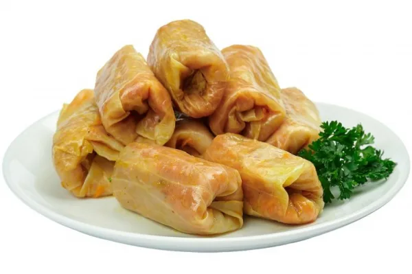
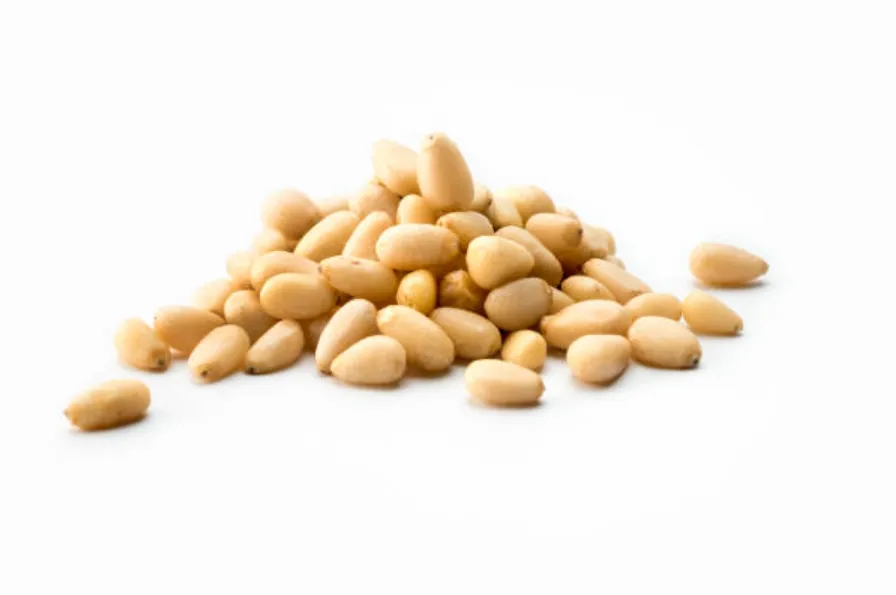
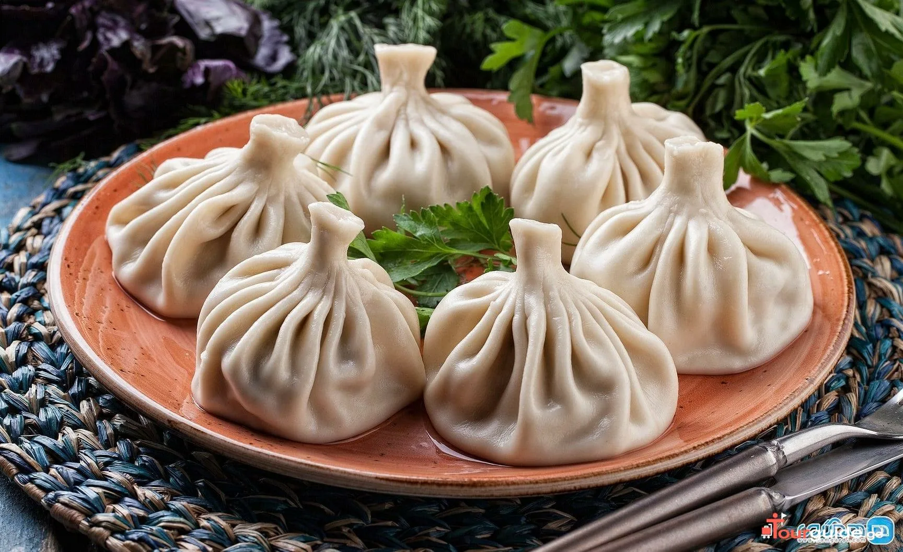

ЧАК-ЧАК
Вкусный и легкий десерт татар, возьмите только...

Голубцы
Голубцы готовят из голубей? Секрет раскрыт...

Кедровые орехи
Вред и польза самого знаменитого сибирского лакомства...
Буузы
Регион: Забайкалье
Буузы (также известные как позы) — это традиционное бурятское и монгольское блюдо, представляющее собой большие пельмени особой формы с сочной мясной начинкой и бульоном внутри. Буузы являются кулинарным символом Бурятии и популярны во всей Восточной Сибири.
Подробнее
Буузы (также известные как позы) — это традиционное бурятское и монгольское блюдо, представляющее собой большие пельмени особой формы с сочной мясной начинкой и бульоном внутри. Буузы являются кулинарным символом Бурятии и популярны во всей Восточной Сибири.
Плов
Регион:Поволжье, Кавказ
Плов - восточное блюдо на русском столе. Плов — это сытное и ароматное блюдо из риса с мясом, овощами и специями, которое заняло прочное место в кухнях многих народов России, особенно в поволжском регионе и на Кавказе.
Подробнее
Плов - восточное блюдо на русском столе. Плов — это сытное и ароматное блюдо из риса с мясом, овощами и специями, которое заняло прочное место в кухнях многих народов России, особенно в поволжском регионе и на Кавказе.
Морошка
Морошка — это традиционный русский десерт из одноименной северной ягоды,
которая обладает уникальным кисло-сладким вкусом с медовыми нотками.
Чаще всего морошку подают в виде варенья, желе или мусса, сохраняя ее
природный аромат и полезные свойства. Этот нежный десерт особенно ценится
за яркий янтарный цвет и тонкое сочетание с творогом, блинами или мороженым.
Подробнее
Борщ
Борщ — это знаменитый суп свекольного цвета, который
считается одним из символов восточнославянской кухни. Его
готовят на мясном бульоне с добавлением свёклы, капусты,
картофеля и других овощей, что придает ему насыщенный вкус
и аромат. Подают борщ обычно со сметаной и свежим ржаным хлебом.
Подробнее
Харчо
Харчо — это традиционный грузинский суп с характерным острым
и кислым вкусом, который готовится на основе говядины и риса.
Его уникальность заключается в использовании специальной смеси
грузинских специй и ореховой заправки, а также добавления ткемали
(сливы) или томатной пасты. Этот насыщенный ароматный суп обычно
обильно приправляют чесноком и свежей зеленью, что придает ему
неповторимый пикантный вкус.
Подробнее
Строганина
Регион:Сибирь, Север
Строганина — это традиционное блюдо северных народов России, представляющее собой тонко наструганные ломтики свежезамороженной рыбы или мяса. Чаще всего для её приготовления используют сига, нельму, омуля или муксуна, которые подают в замороженном виде.
Подробнее
Строганина — это традиционное блюдо северных народов России, представляющее собой тонко наструганные ломтики свежезамороженной рыбы или мяса. Чаще всего для её приготовления используют сига, нельму, омуля или муксуна, которые подают в замороженном виде.
Квас
Квас — это традиционный русский кисло-сладкий напиток,
который готовят путем брожения из ржаного хлеба, муки или сухарей.
Он обладает освежающим вкусом с легкой газировкой и часто содержит
такие добавки, как изюм, мята или фрукты. В жаркую погоду квас прекрасно
утоляет жажду и считается полезным напитком благодаря содержанию витаминов
и молочной кислоты.
Подробнее
Оливье
Оливье — это знаменитый русский салат, ставший неизменным атрибутом
новогоднего стола и других праздничных застолий. Его готовят из
отварного картофеля, моркови, колбасы или мяса, маринованных огурцов,
яиц и зелёного горошка, заправляя майонезом. Нежный вкус и сытность
этого салата сделали его одним из самых любимых и узнаваемых блюд
русской кухни во всём мире.
Подробнее
Хинкали
Регион: Кавказ
Хинкали — это традиционное блюдо кавказской кухни, представляющее собой крупные dumplings с мясной начинкой и ароматным бульоном внутри. За последние десятилетия хинкали прочно вошли в российскую кулинарную культуру и полюбились миллионам людей.ы
Подробнее
Хинкали — это традиционное блюдо кавказской кухни, представляющее собой крупные dumplings с мясной начинкой и ароматным бульоном внутри. За последние десятилетия хинкали прочно вошли в российскую кулинарную культуру и полюбились миллионам людей.ы
